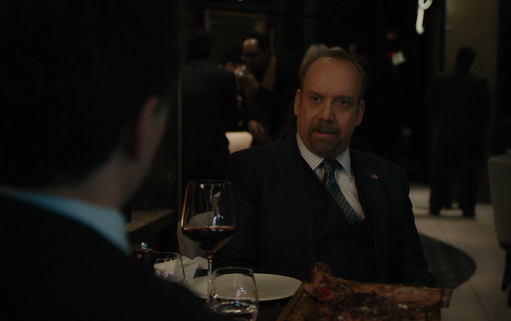

01
牛排馆 · 晚餐
证据不够，朋友也已疏远

剧情事实阿勒德从得克萨斯回来，报告知情者不肯留下记录，愿意说话的人又没有实质信息，查克要求继续找公司内部证人。同晚他遇见已与泰加结婚的艾拉，发现自己没有被邀作伴郎，也听出朋友正为妻子的瑜伽事业持续出钱、努力维持收入。[1][2]
这一场为什么重要 · 个人解读
同一晚餐先呈现调查资源的不足，再呈现私人关系的亏空。卡特勒愿意作证并不意味着案件已经稳固；艾拉愿意说笑也不意味着旧伤消失。查克接下来既要找到可信证据，也要证明自己仍能做朋友，两个目标都会诱使他继续调用自己的职权。
因此 → 查克决定调查艾拉的私人钱款去向。